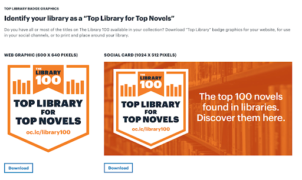
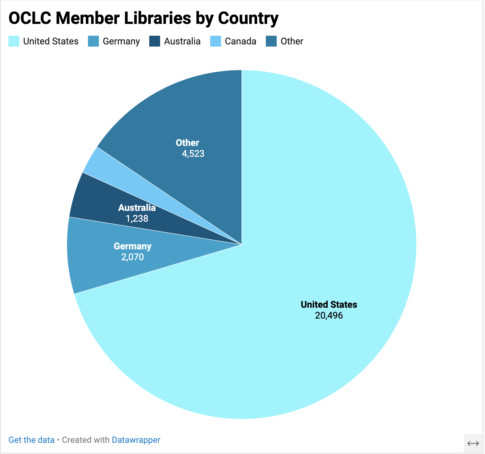
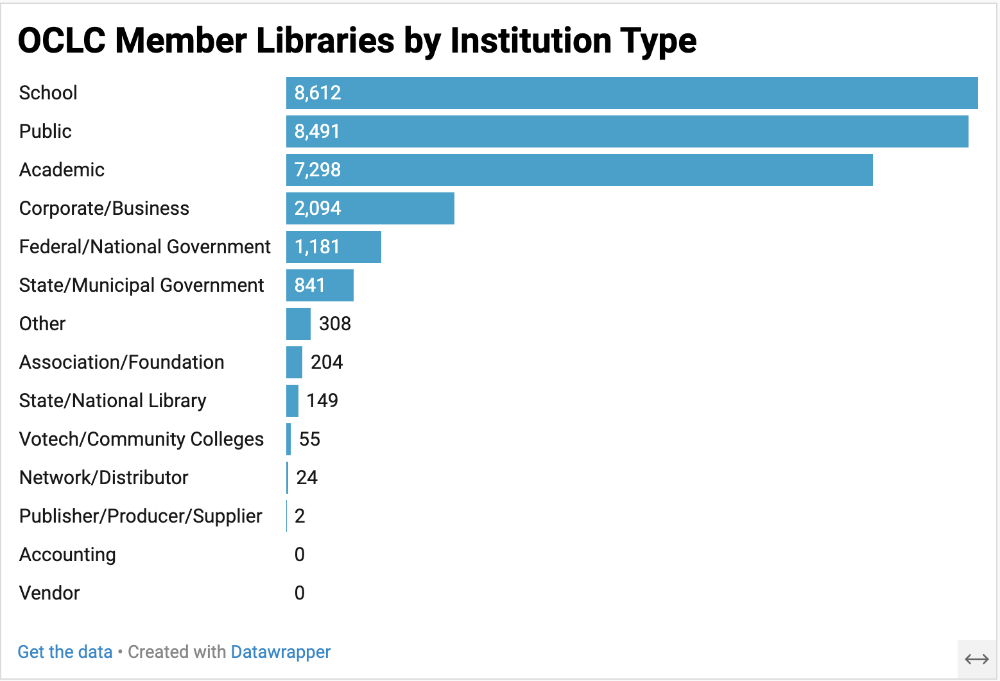
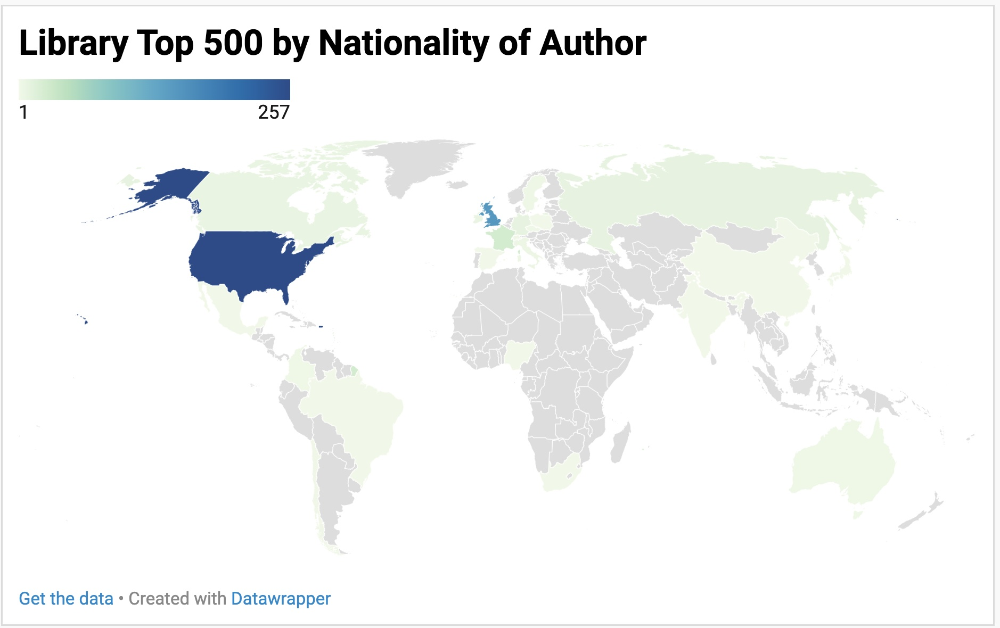

Introduction
This dataset contains information on the top 500 novels most widely held in libraries, according to OCLC, a library organization with over 16,000 member libraries in over 100 countries. The dataset includes information on authors’ biographies, library holdings, and online engagement for each novel, as well as the full text for all works that are not currently under copyright (190 novels).
Creative Commons License
This work is licensed under CC BY 4.0

This dataset is based on a list of the Top 500 Novels compiled by OCLC from information in their online database WorldCat, the largest database of library records. The first section of the list was published online with great fanfare as the Library 100 in 2019, accompanied by the claim that for novels, “literary greatness can be measured by how many libraries have a copy on their shelves.”
We wondered about the implications of this claim and about what it means to base ideas of “literary greatness” on the number of libraries that hold a particular work. How do historical biases in systems of literary production and preservation figure into these kinds of claims? Which libraries’ records are included in the data? And how do we even define what counts as a novel?
To contextualize the initial list and dig into its claims about literary greatness, we collected information on each novel from a number of other databases, including Wikipedia, Goodreads, Project Gutenberg, the Virtual International Authority File (VIAF), and Classify (a now-shuttered OCLC tool), which we have compiled here.
The dataset was created by Anna Preus and Aashna Sheth, who are also the authors of this data essay.
HISTORY
To start, what is a novel? “Novel” is an umbrella term for works of longform fiction in a range of genres: romance, sci-fi, historical fiction, horror, detective fiction, westerns, etc. The word “novel” was first used in English to describe a “long fictional prose narrative” in the 1600s (OED), and the form increased in popularity across the 18th and 19th centuries. Interestingly, OCLC’s list of top 500 novels extends much further back than this. The oldest work on the list is The Tale of Genji, a classic work of Japanese literature written over 1,000 years ago. On the other end of the timeline, the list includes many contemporary best-sellers, including all the titles in the Harry Potter, Twilight, and Hunger Games series.
This long time span is one of the things that makes OCLC’s data, and the list specifically, so interesting. A key issue in literary studies is which works from the past we continue to read in the present, and which works from the present we’ll continue to read in the future. The vast majority of novels fall out of circulation shortly after they’re published, quickly becoming part of what Margaret Cohen has called “the great unread” (Cohen 2018, 61).1 The Top 500 list, though, represents historical works that have achieved exceptional levels of attention and have entered what is often referred to as the literary “canon.” Ankhi Mukherjee defines the canon as “a set of texts whose value and readability have borne the test of time,” noting that this “involves not merely a work’s admission into an elite club, but its induction into ongoing critical dialogue and contestations of literary value” (Mukherjee (2017)). Canonical works continue to be read, taught, and discussed, and in popular terminology they’re often considered “classics.” These are works you might read in a high school or college English class: F. Scott Fitzgerald’s The Great Gatsby, for example, or Jane Austen’s Pride and Prejudice.
One of the things that defines a classic is the fact that it stays in print for a long period of time. When a book is published, it is issued in an edition with a specific number of physical copies. If the book is profitable, it may be re-issued in different editions over many years and edited repeatedly by different scholars across time. If it becomes canonical, it is likely to be issued in dozens or hundreds of editions even long after the author’s death, leading to more physical copies of the book in circulation. Importantly, though, there is not just one canon or one stable set of classics. Canons are constructed and reinforced by people; they are socially and historically defined and are bound up in power relationships and in histories of exclusion and erasure. This is what makes OCLC’s task of defining the top 500 greatest novels of all time so potentially problematic: their data reflects a history of canonization that has influenced library collections, and which has long been biased toward English-language texts, White male authors, and works produced in Europe and North America.2
The newer works included on the list are books that have achieved immense popularity and widespread sales in recent years. These works, which were published during the period that Dan Sinykin has termed the “Conglomerate Era,” are usually issued by publishers that operate as part of large, multinational corporations, and which have the resources to print and distribute millions of books around the world (Sinykin 2023). Many of these novels have also been adapted into major films or TV series.
By focusing on books that librarians have chosen to continue to make available to readers, OCLC was able to create a list of widely read novels that includes both classic texts and more recent, popular works by living authors. The list, though, also reflects various forms of bias rooted in literary history, in library collections, and in the data itself. We wondered, whose conception of “literary greatness” is being represented? How does OCLC’s data compare to other potential indicators of popularity or canonicity? And, for that matter, how was the list actually constructed?
WHERE DID THE DATA COME FROM? WHO COLLECTED IT?
The Top 500 list
The initial list of Top 500 novels was collected by a team at OCLC, the non-profit organization that manages WorldCat. It was compiled based on analysis of data in WorldCat, which consists of catalog records created and entered by librarians at OCLC member libraries.
Our curated dataset
Building on this list, we compiled data from a number of other databases, including Project Gutenberg, VIAF, Wikipedia, and Goodreads–a process that is described in greater detail below.
WHY WAS THE DATA COLLECTED? HOW IS THE DATA USED?
The Top 500 list:
OCLC’s goal in producing the Top 500 list seems to be to share information about an important set of texts based on the unprecedented amount of information in their database, as well as to encourage library patronage and reading. The website for the list includes a “Librarians Kit” with a variety of publicity materials–from printable bookmarks to Instagram tiles–that can help bring attention to books in the Top 500 list within libraries’ collections.

Our curated dataset:
Our goal as researchers was to collect data from additional sources in order to understand how the list was constructed and to contextualize and question its claims about literary greatness.
HOW WAS THE DATA COLLECTED?
The top 500 list:
The Top 500 list represents a massive data extraction and analysis effort on the part of OCLC. While they do not provide detailed information on how the list was compiled, they do offer a brief explanation of the process that went into creating the list on their FAQ page (written in the context of the top 100, but also applies to the top 500):
Materials in libraries are described and tracked in WorldCat in two ways. Any specific work of literature, music, art, history, etc., has an associated catalog record. This describes the item in a general sense. Every copy of the same book, for example, shares the same record. WorldCat also tracks library holdings, which indicate that a specific library has (or holds) at least one copy of that item.
The Library 100 is based on the total number of holdings for a specific novel across all libraries that have registered that information in WorldCat. When a library tells OCLC, “We have a copy of that book available,” that counts as a holding, and in the case of The Library 100, counts as +1 toward its ranking on the list.
This process initially sounds straightforward: to create the Top 500 list, the OCLC team presumably searched the title of a work, counted the number of libraries that held each title, and published the first 500. But when we dug into the database, we found it was actually much more complicated than that. The list is influenced by a range of factors, including which libraries’ collections are represented, what kinds of books are considered, and how holdings are totalled across different editions and translations of individual titles.
Which libraries are represented?
According to OCLC, “WorldCat holdings information represents the collective inventory of OCLC member libraries” (“WorldCat Holdings” 2021). But who are these member libraries? And where are they? OCLC publishes some summary data about WorldCat, revealing, for example, that it currently holds over 548 million bibliographic records representing over 3.3 billion library holdings in 490 languages. But while OCLC stresses its position as “The worldwide catalog of library resources” and emphasizes the membership of libraries in over one hundred countries, it doesn’t provide much specific information on where these libraries are located or what kinds of institutions they are (“WorldCat Holdings” 2021).
In order to get a general sense of the geographic distribution of OCLC member libraries, we dug into the organization’s directory and conducted filtered searches for libraries in each country. We found that over 70% of OCLC’s members are in the U.S., followed by 7% in Germany, 4% in Australia, 2.6% in Canada, and 1.5% in the U.K. Clearly, OCLC is most well represented in the U.S., where it is based, and the fact that three of the other top four countries in terms of membership have English as a national language helps to explain why English-language materials are disproportionately represented in the catalog and in the Top 500 List.

We used a similar approach to look at what kinds of institutions are represented in WorldCat, this time filtering by “Library Type.” We found that most OCLC members are school libraries (29%), public libraries (29%), or academic libraries (25%) and that membership is fairly evenly distributed across these categories. The prominence of school libraries and academic libraries raises the issue of which patrons have access to these libraries–and thus whose conception of popularity is being represented in the holdings data. It also points to the influence of educators on this picture of the Top 500 novels.

Which books are represented?
Since the list focuses specifically on novels in these libraries’ collections, it is also narrowed by genre. OCLC discusses its process for identifying novels on its FAQ page, noting that they began with “everything in WorldCat that counts broadly as ‘fiction’” and then winnowed the list down through the removal of known categories like “children’s books, poetry, drama, folklore, comics,” and “short stories.” The final list was later “reviewed by an editorial team.”
Importantly, the Top 500 List is also based only on holdings of physical books, and it “does not include e-books, audiobooks, children’s adaptations, film adaptations, etc.” This exclusive focus on print books puts emphasis on the choices of librarians, since libraries have limited shelf space and periodically have to cull their print collections. As OCLC puts it, “libraries offer access to trendy and popular books. But, they don’t keep them on the shelf if they’re not repeatedly requested by their communities over the years.” By contrast, they suggest that ebooks are often incorporated via “automatic links to free collections on the web,” which do not “represent a specific decision to add a particular novel to a library’s collection” (“The Library 100: Frequently Asked Questions” 2023). While this may be the case, given the popularity of eBooks (Zhang and Kudva 2013), a focus on print must have influenced the overall makeup of the list, and, again, whose idea of popularity or “greatness” it represents.
How are editions and translations counted?
One further complication is that in WorldCat, records are stored by edition, meaning that each edition of a particular novel has its own catalog record. An individual title may have been released in hundreds or thousands of editions since its initial publication. Miguel de Cervantes’s Don Quixote, for example, has over 9,000 editions listed in WorldCat.
This means that when developing the list, the OCLC team actually had to find all the editions of a specific title and sum the number of libraries that hold that edition across all editions. Thus the top 500 list is not only a representation of how many libraries carry the work, but a representation of how many times a book has been re-edited and re-issued; the more editions a book has, the more records are created and the more copies of a book a library may hold. Often, there are duplicate records for individual editions, which may affect the overall count of copies tallied by OCLC. And when a work is translated into different languages, all the editions of all the translations are also recorded in WorldCat, which also figures into the count of total holdings for each novel.
The combined influence of these different factors can be seen in the representation of works in languages other than English, which make up around 14% of the list. The non-English-language texts that are at the top of the list–Don Quixote, Crime and Punishment, Madame Bovary, The Three Musketeers, and War and Peace–have all been widely translated into English, a trend that continues as you go down the list.
Our curated dataset:
We chose to contextualize the Library Top 500 List by compiling additional information on each novel from a range of other sources. We focused on gathering three main categories of information: information that could help us understand what types of works–and whose works–were included on the list, data that could potentially provide alternate measures of popularity or canonicity, and the full text of each novel that was in the public domain. We collected information from the following sources:
WorldCat: we used the now-shuttered OCLC tool Classify to gather data from WorldCat based on an OWI (OCLC Work ID) for each of the 500 novels on the list.3 We recorded total physical and eholdings for this work. The Top 500 list only considers physical holdings. The number of holdings in our curated dataset is not perfectly descending as the top 500 rank decreases, as one would expect. This is likely due to complications with the OWI number and with the inclusion of translations; the top 500 list uses multiple OWIs to calculate total holdings, while we only use one. Which OWIs the top 500 curators use for each work is unclear.
VIAF: The Virtual International Authority File is an OCLC-run database that contains structured records–called “name authority files”–for individual authors and creators. We used VIAF to gather information on authors whose novels were included on the list, including their birth and death dates, nationalities, genders, and occupations.

Wikipedia: We used Wikipedia, the popular, free, volunteer-authored encyclopedia, to identify the year of first publication for each novel on the list.
Goodreads: Goodreads, which is owned by Amazon, is the largest social networking site related to books, with over 150 million members. It allows users to rate, review, and discuss a huge range of texts. We drew on data from Goodreads as a potential alternate indicator of texts’ popularity, collecting total number of reviews, total number of ratings, and average overall rating for each novel on the list.
Project Gutenberg: We used Project Gutenberg to access the full-text of all novels on the list that are currently in the public domain, or in other words, out of copyright. We chose Project Gutenberg because their eBooks are edited by volunteers, whereas many larger content repositories, like Internet Archive and HathiTrust, only make available machine-generated transcriptions of historical texts, which tend to be less accurate.
Our work creating this dataset not only builds on the work of the OCLC team who compiled the Top 500 list, but on the labor of the thousands of librarians who created records held in WorldCat and VIAF, of the volunteers who transcribed texts for Project Gutenberg and wrote articles for Wikipedia, and of the social media users who reviewed and rated books on Goodreads.
EXAMINING BIAS
The top 500 list:
The OCLC’s definition of “literary greatness” is biased based on the libraries that OCLC represents, the list’s exclusive focus on physical books, and its emphasis on raw number of holdings, which is influenced by number of editions. OCLC acknowledges potential biases in their claims, noting that “The [top 500] list emphasizes many books that we tend to think of as ‘classics,’ because those are the novels most often translated, retold in different editions, taught and widely distributed in library collections. Because of this, the list tends to reflect more dominant cultural views.”
A key reason we decided to collect additional data related to the list was to explore what kinds of works, and especially whose works, it represents. Drawing on author data gathered from VIAF, we can calculate some overall descriptive statistics for the list.
Looking at the AUTHOR_GENDER column, we can count the number of authors identified as male and the number identified as female (VIAF only includes options for binary genders, which is discussed further below), and we can see that over 70% of the novels were written by men.
Code
import matplotlib.pyplot as plt
import pandas as pd
df = pd.read_csv("final_merged_dataset.tsv", sep='\t', header=0, low_memory=False)
df["author_gender"].value_counts(dropna=False)We can use a similar approach to look at the nationalities of authors whose works are represented on the list. Focusing on the AUTHOR_NATIONALITY column, we can count how many times each country code appears, and see that over 80% of the novels were written by authors from the U.S. or the U.K.
Code
df["author_nationality"].value_counts(dropna=False)
To find out what time period is most frequently represented on the list, we can look at the PUB_YEAR column and see that almost 50% of novels were first published between 1950 and 2000.
Code
import numpy as np
bins = np.arange(1000, 2060, 50)
bars = df['pub_year'].plot.hist(bins=bins, edgecolor='w')
plt.xticks(rotation='vertical');
plt.xticks(bins);We can also get a sense of the immense influence of individual authors who appear on the list numerous times. The most represented authors are John Grisham (19 novels) and Charles Dickens (15 novels).
Code
df["author"].value_counts(dropna=False).head(10)Drawing on slightly more complex techniques, we can see that there is a strong positive correlation (p=1.1165e-73, r=0.6985) between the current ranking of the Top 500 List and a ranking based on the total number of editions for each novel. This suggests that the more editions a novel has, the more likely it is to be higher on the list, which is relevant because European and American editing practices have long favored authors occupying dominant social positions. Historically, works by White authors and male authors are more likely to have been re-edited and re-issued and to be considered literary classics (Gates; Mandell).4
Code
import pandas as pd
import seaborn as sns
from scipy import stats
# inspired by: https://www.sfu.ca/~mjbrydon/tutorials/BAinPy/08_correlation.html
sns.lmplot(x="oclc_editions_rank", y="top_500_rank", data=df)
dropped_df = df[df.oclc_editions_rank.notna()]
print(stats.pearsonr(dropped_df['oclc_editions_rank'], dropped_df['top_500_rank']))Similarly, we confirm that there is a very strong positive correlation (p=5.6541e-96, r=0.7642) between number of editions and number of holdings of a novel; the more editions a book has, the more total holdings are reported in OCLC.
Code
sns.lmplot(x="oclc_holdings_rank", y="oclc_editions_rank", data=df)
dropped_df = df[df.oclc_editions_rank.notna() & df.oclc_holdings_rank.notna()]
print(stats.pearsonr(dropped_df['oclc_holdings_rank'], dropped_df['oclc_editions_rank']))Our curated dataset:
Although the additional data we curated helps to contextualize the Top 500 List and to reveal some of its biases, the data we added also contains its own biases. For starters, as researchers, we both primarily work in English, and we are pursuing this project at a University in the U.S. These contexts have informed our areas of inquiry and the sources we’ve chosen to use. We primarily drew on widely used online databases created in English-language contexts (VIAF, Project Gutenberg, etc.). Further, we have limited our data collection to OCLC’s list of the Top 500 novels and did not attempt to expand to other rankings of literary greatness or to additional novels.
The sources we have used, of course, have biases of their own. VIAF relies on a standardized vocabulary, which can be helpful for data analysis and organization, but erases important nuances. For example, VIAF categorizes gender with the binary labels of “male” and “female,” with the only other option being “unknown.” This, of course, reinforces binary understandings of gender and obscures the existence of non-binary people (Drabinski (2013)). Labels used in fields like “AUTHOR_NATIONALITY,” “FIELD_OF_ACTIVITY,” and “OCCUPATION” also do not paint a complete picture. The entries in the latter two columns are based on Library of Congress data and may not be equally rich for all authors. And nationality labels from VIAF can obfuscate racial, political, ethnic, and tribal affiliations, and flatten the complexity of individual authors’ experiences.5 For example, the nationality for Sherman Alexie, author of The Absolutely True Diary of a Part-time Indian, is listed as “U.S.A.”, but his identity as a member of the Spokane Tribe of Indians is not referenced. In another example, the first nationality listed for Khaled Hosseini, author of The Kite Runner, is “U.S.A.” followed by “Afghanistan.” This is not inaccurate but it is oversimplified, since Hosseini was born in Kabul, lived in Iran, France, and Afghanistan throughout his childhood, and then moved to California after his family sought political asylum in the U.S.
We urge researchers using this dataset to consider its biases when drawing conclusions, and to seek other sources to expand it, question it, and/or to fill in information that may be missing or lacking.
You can find more metadata analysis in this colab notebook.
POPULARITY VS CANONICITY
Because we were interested in whose opinions are represented on the list, we wanted to bring in an alternate measure of popularity, and we decided to use information from Goodreads. Goodreads was appealing because of its prominence online (over 130 million users), which we hoped might help us consider the opinions of a somewhat different set of readers than those theoretically represented through the physical holdings of libraries. Melanie Walsh and Maria Antoniak, for example, have drawn on Goodreads reviews to analyze how social media users define the “Classics.” Drawing on this work, we compare the ranking of novels on OCLC’s original list of Top 500 novels to the rankings of those same novels based on Goodreads ratings and number of reviews. Through this comparison we aim to consider how social media users engage with “classic” and “popular” novels and to interrogate the relationship between canonicity and popularity, using information from different data sources.
To unpack the differences between the Goodreads data and the Top 500 rankings, we first need to think about how we want to compare the two lists. Given that we have recorded Goodread rankings by average star rating and total number of ratings, which metric would be better to use? Would we want to create another metric?
For our purposes, we decided to use total number of ratings instead of average rating, since it seemed most closely related to how OCLC measures popularity–by number of holdings, not how much patrons say they enjoy reading the books.
Code
def top_5_comparison(col_name):
print(df[["title", "author", "top_500_rank", col_name]].head(5))
sorted = df.sort_values(by=[col_name])
print(sorted[["title", "author", "top_500_rank", col_name]].head(5))
top_5_comparison("gr_num_ratings_rank")Above you can see that the Goodreads rankings and the top 500 rankings aren’t very aligned! What factors might affect popularity on Goodreads compared to OCLC?
Code
import math
from IPython.core.display import HTML
def print_rankings(d, col_name):
rank_B = d[col_name]
rank_A = d["top_500_rank"]
title = d["title"]
points_moved = 0
if (math.isnan(rank_B)):
points_moved = 501
d["html_output"] = f'<span style="color:black !important"> ● {title}</span>'
else:
if rank_B > int(rank_A):
points_moved = rank_B - rank_A
d["html_output"] = f'<span style="color:red !important"> ▼ -{int(points_moved)} {title}</span>'
elif rank_B < rank_A:
points_moved = rank_A - rank_B
d["html_output"] = f'<span style="color:green !important"> ▲ +{int(points_moved)} {title}</span>'
else:
d["html_output"] = f'<span style="color:black !important"> ● {title}</span>'
d["points_moved"] = int(points_moved)
return d
df = df.apply(lambda d: print_rankings(d, "gr_num_ratings_rank"), axis=1)
html_output = "<br>".join(df["html_output"].tolist())
HTML(html_output)You can find more metadata analysis here.
FULL TEXT DATA
In addition to the contextual information we gathered, we also collected the full text of all novels on the list that were out of copyright and available on Project Gutenberg. We have provided some ideas for analysis in this Colab notebook, but we hope this full-text data will also offer opportunities for users to explore these novels on their own and to combine full-text and metadata analysis in new ways.
Conclusion
The Top 500 List is presented in a straightforward manner. It is just a list of 500 novels that are widely held in library collections along with their authors. But when you start to dig into the data underlying the list, it gets much, much more complicated.
The list draws on hundreds of millions of library records representing billions of library holdings. This is such a vast amount of information that it may appear to provide opportunities to draw comprehensive conclusions. However, the data overwhelmingly represents the holdings of libraries in the U.S.A., the majority of which are also connected to some sort of educational institution. Though it claims to represent great novels from around the world, the list primarily includes English-language novels and novels popular in English translation.
The list also represents the disproportionate influence of academics and publishers, who chose to re-edit and re-issue certain texts and not others. The correlation we found between number of editions and number of holdings is likely to make intuitive sense to library users–especially users of academic libraries, which tend to hold many editions of classic texts, and which often continue to purchase these texts as they are re-edited and re-issued. Histories of canonization in the U.S. and Europe have long been biased toward works by White, male, middle and upper class authors–a fact which clearly influenced the composition of the list.
In pointing out these biases we do not intend to criticize OCLC for producing the list, which provides a useful snapshot of some of the most widely held works in their database and represents a tremendous data curation and analysis effort. We do, however, want to question the notion that “literary greatness” can be measured by the number of physical copies of a book held on library shelves. It is important to dig into data that is used to make universal claims, especially when it evidences such strong biases toward a single linguistic tradition, toward particular geographic regions, and toward individual authors. John Grisham’s work appears nineteen times on this list, Charles Dickens’s work appears fifteen times, and John Steinbeck and C.S. Lewis’s work each appears eight times. What does it mean to posit that these four men wrote ten percent of the greatest novels across all languages and cultures across all time?
While each of these works deserves individual attention, looking at literary data in aggregate can help to reveal some of these biases and trends across a larger number of texts, and across library collections. We hope this dataset provides fruitful opportunities for exploration, and we have included a few more suggestions for analysis here [LINK_TO_ACTIVITIES_TAB].
References
Cohen, Margaret. 2018. The Sentimental Education of the Novel. Princeton: Princeton University Press. https://muse-jhu-edu.offcampus.lib.washington.edu/pub/267/monograph/book/61065.
Drabinski, Emily. 2013. “Queering the Catalog: Queer Theory and the Politics of Correction.” The Library Quarterly: Information, Community, Policy 83 (2): 94–111. https://doi.org/10.1086/669547.
Mandell, Laura C. 2015. “Gendering Digital Literary History.” In A New Companion to Digital Humanities, 511–23. John Wiley & Sons, Ltd. https://doi.org/10.1002/9781118680605.ch35.
Mukherjee, Ankhi. 2017. “Canonicity.” Oxford Bibliographies on Literary and Critical Theory. https://www.oxfordbibliographies.com/view/document/obo-9780190221911/obo-9780190221911-0054.xml.
Sarker, Sonita. 2023. “The Whiteness Problem.” Modernism/Modernity Print Plus, June. https://modernismmodernity.org/forums/whiteness-problem.
Sinykin, Dan. 2023. Big Fiction: How Conglomeration Changed the Publishing Industry and American Literature. Columbia University Press.
Zhang, Yin, and Sonali Kudva. 2013. “Ebooks Vs. Print Books: Readers’ Choices and Preferences Across Contexts.” Proceedings of the American Society for Information Science and Technology 50 (1): 1–4. https://doi.org/10.1002/meet.14505001106.
Activity 1
The Top 500 List represents a history of literary reception that favors works by White, European and American men who wrote in English or were widely translated into English. We share the code we used to analyze these forms of bias in our Metadata Analysis colab notebook. What other forms of bias would you want to consider in relation to this dataset? What categories of information (or columns) can we look at within the dataset to help us understand different forms of bias represented in the Top 500 List? What kinds of information are missing from the dataset?
Try adapting the code in this Metadata Analysis notebook to consider other forms of bias in the Top 500 List.
Activity 2
In our data essay, we compared two different ways of ranking the Top 500 List: first by OCLC’s original order (based on number of library holdings for particular titles), and second by number of ratings on the social media site Goodreads. Which works rose or fell the most according to Goodreads rankings? Do you notice any commonalities among the books that rose or fell the most? The dataset also includes multiple other options for ranking the list. How do these other rankings compare to OCLC’s ranking of the titles?
Try adapting the code in the “Rank Analysis” section of the Metadata Analysis notebook to compare OCLC’s initial ranking of the list to another ranking metric (for example, OCLC_EDITIONS_RANK or GR_AVG_RATING_RANK).
Activity 3
In addition to the dataset of metadata, we have also created a dataset that includes the full text of all the novels that are not currently under copyright (190 texts). With this dataset, it’s possible to connect full-text and metadata analysis. In our Full Text Analysis notebook, we’ve included suggestions for analyzing texts according to type-token ratio, a basic measure of lexical complexity that compares the ratio of unique words to total words in a text. What other quantitative measures could you apply to the full-text of these novels? How can we connect these measures to our metadata analysis? For example, what is the average length of novels on the list written by authors labeled as male, vs. those labeled as female?
| Date | Title | Categories |
|---|---|---|
| Feb 26, 2024 | Introduction to DPLYR with Top 500 Novels | dplyr, exercise |
No matching items
Footnotes
Franco Moretti also uses this term, borrowing it from Cohen. We follow Cohen’s use of the term.↩︎
We capitalize “White” following Sonita Sarker, who writes, “The capital letter ‘W’ indicates that White is a collective identity. The term has mostly indicated individuals, in the use of the lower case ‘w,’ signifying at once the unique humanity of (white) personhood and absolving them of collective responsibility in White supremacy” (Sarker 2023)↩︎
For more on how editions of works are clustered in WorldCat see “Clustering WorldCat Discovery.”↩︎
Laura Mandell argues that “women writers are being recovered and forgotten in cycles, both in print and potentially in digital media,” pointing out that historically “works by men have been published and republished” while “women writers only appear in the materiality of the single print run” (Mandell (2015)). In his work on “What Makes a ‘Classic’ African American Text,” Henry Louis Gates Jr. discusses the historical exclusion of Black authors from the Penguin Classics series, as well as his work editing a new series of African American Classics for the imprint. He notes that “texts by people of color, and texts by women” are “still struggling, despite enormous gains over the last twenty years, to gain a solid foothold in anthologies and syllabi.” These kinds of biases in turn affect which works appear on library shelves.↩︎
Safiya Umoja Noble argues that “information organization is a matter of sociopolitical and historical processes that serve particular interests,” tying library cataloging and classification systems to “the development of racial classification” in the 19th century (136-137). And Roopika Risam also highlights the role of public-sector knowledge institutions in perpetuating these structural biases, emphasizing “the failure to take into account the complicity of universities, libraries, and the cultural heritage sector in devaluing black and indigenous lives and perpetuating the legacies of colonialism in the cultural and digital cultural records alike” (14).↩︎